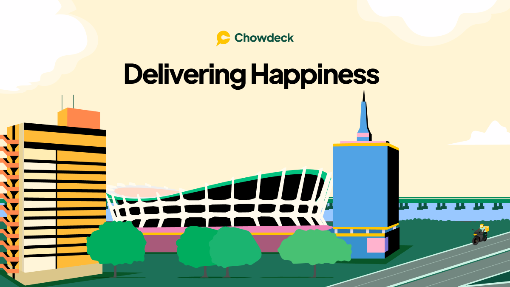

Iterative App Design
for Start-up "Chowdeck"
CONTEXT
This is a project about designing an interactive interface for an emerging startup, which aims to solve the problem the startup is working on. Chowdeck is what our group choose. Chowdeck is an on-demand food delivery mobile App like Uber Eats, but only for Africa. Chowdeck is on a mission to empower restaurants in Africa to deliver meals to customers anywhere and anytime, and customers can buy food in a few short steps and have it delivered to their doorstep in under 30 minutes.
RESEARCH & FEEDBACK
Chowdeck is on a mission to empower restaurants in Africa to deliver meals to customers anywhere and anytime, and customers can buy food in a few short steps and have it delivered to their doorstep in under 30 minutes.
Initial Prototype
- Make the restaurant image larger so that the user can easily understand which food this restaurant serves.
- Add ratings for each restaurant so that users can know which restaurant is better.
- Add different pages for delivery addresses in the account page so that when you click on the back button, it returns to the account page, not the home page.
- Use more colors to make the whole App more appealing to users.
- The plus button on the account page is confusing, an interactive picture is better.
- Add a new page after clicking the apple pay or Paypal or cards.
- Add pay for all functions in the carts page so that people can check out all the orders at once.
- Be consistent throughout different pages.
ITERATIVE DESIGN
Initial Sketches


Wireframe


New Prototype
User Testing
We conduct usability test through UserTesting.com using our new prototype. Below is the overall task, corresponding steps, testing instructions, and post-test questions we gave to the users. We also attached our three user testing videos and the analysis of the results.
Overall Task:
Order food from Jack's kitchen that has already been chosen in the cart and pay for it.
Steps:
- Go to Jack’s Kitchen from the home page to order food from this restaurant.
- Go to the shopping cart of chosen items from Jack’s kitchen.
- Go to checkout page, confirm delivery destination, delivery time and order details.
- Continue to pay, choose a payment method, complete checkout and place the order.
Testing Instructions:
- The app test is a figma prototype so you cannot treat it as a real app but an interactive mockup.
- Some of the buttons have reactions for a click while some don’t.
- A figma prototype expects interactions between specific pages. It expects specific series of steps of clicking through the pages. During the testing procedure, you can try to click on buttons on the page and check whether the reactions of the click match your expectation.
- Following the task steps, you should not need to click on buttons which do not have reactions.
Post-test questions:
- Are the correct buttons needed for task steps hard to identify in the pages?
- Do the buttons respond as you expect?
- Are there any excessive step you think we can get rid of?
- What do you think about the overall effectiveness and efficiency of the prototype?
Testing Videos:
Analysis of Results:
Our subtasks mainly consist of going to a specific restaurant’s page, check the shopping cart of that restaurant, confirm details and complete order.
In the UserTesting videos, the three testers all complete our task successfully and without difficulty. All of them rate the steps “very easy” to complete, and “strongly agree” that they can complete our task in a few short steps. One tester commented that our app is evern more usable and efficient than many food delivery apps.
One thing that is not in line with our expectations is that, two testers directly went through the checkout process in the first step. Then in the step when we expect users to go to shopping cart in the restaurant’s page, they went to the shopping cart for the restaurant from the cart page. It may occur because of some ambiguity in our task instructions. In spite of that, we think it shows that there are multiple ways to access the shopping cart in our mockup, which make our app more utilitarian and functional. It is in accord with our purpose of shortening the steps for food delivery.
CONCLUSION
- My first takeaway is how we can improve the widely-used food delivery app to serve a certain purpose, and how that design is reflected on the prototype.
- Designing a proper prototype of a mobile app for everyday purposes increased our understanding of UI/UX a lot.
- I got the fundamental ideas and learned about how an iterative process of front-end designing works, how feedbacks and user testings are properly used in the process.
Let's get in touch!
(000)-111-2222
myname@gmail.com
© Made by Edward, 2022